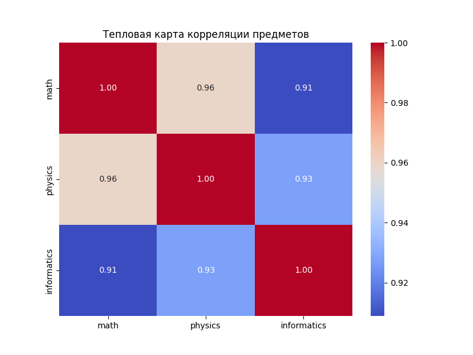
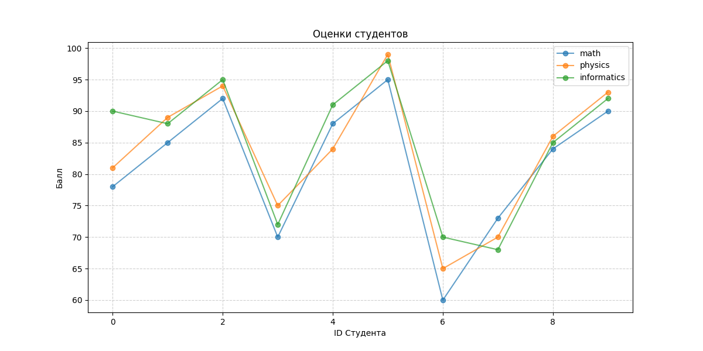
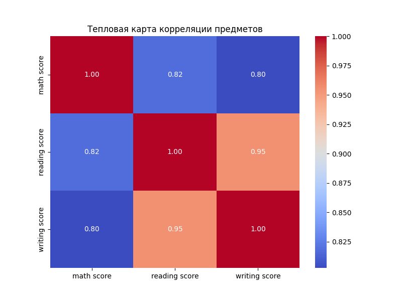
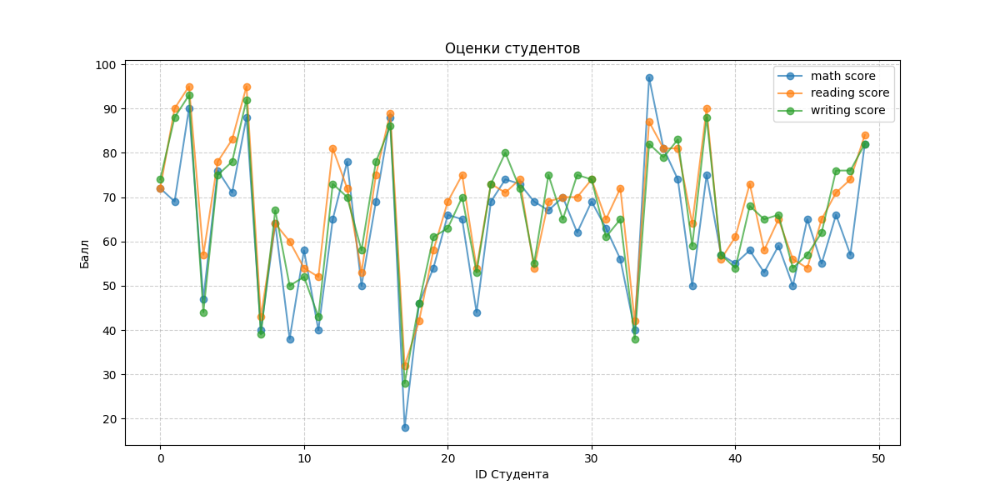
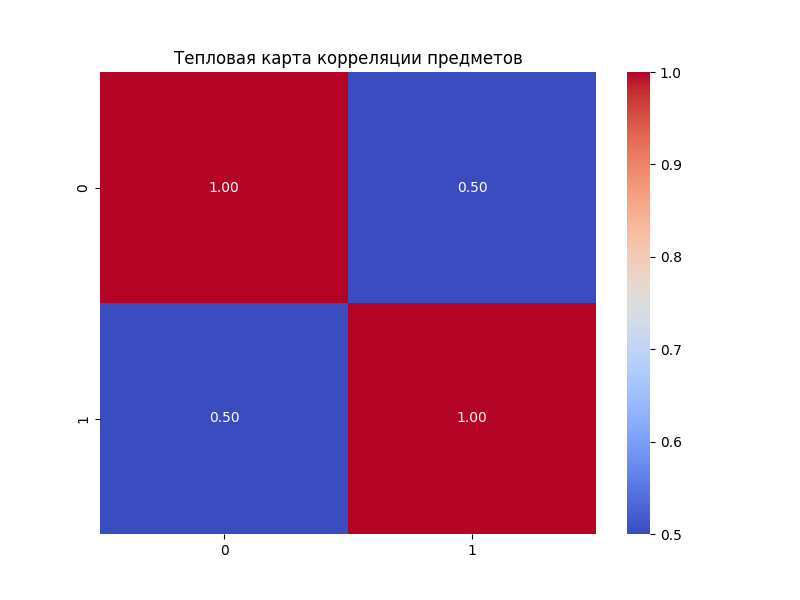
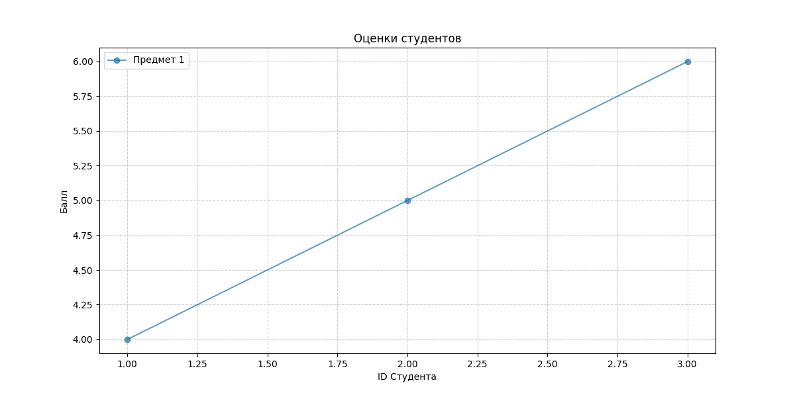
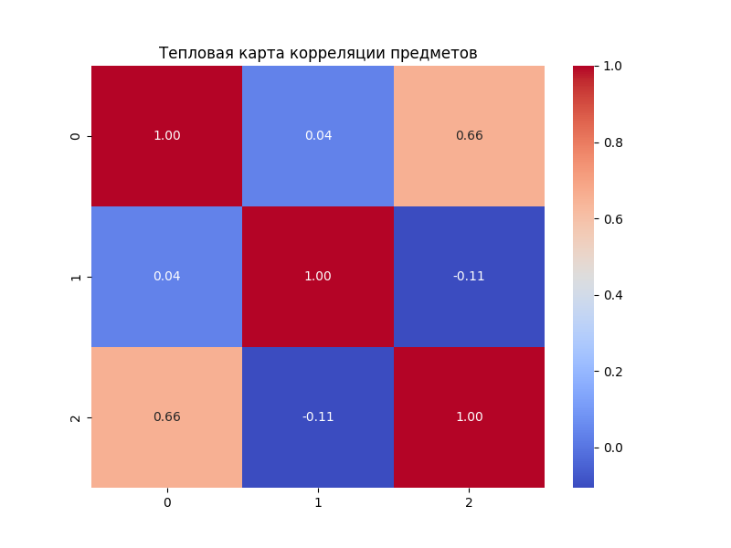
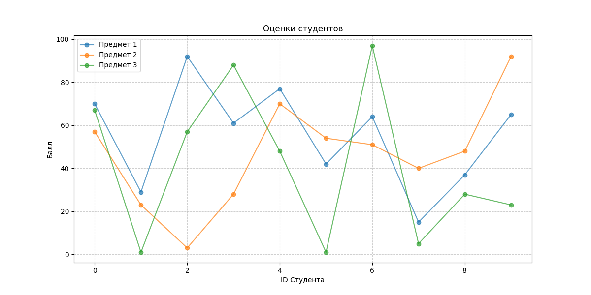
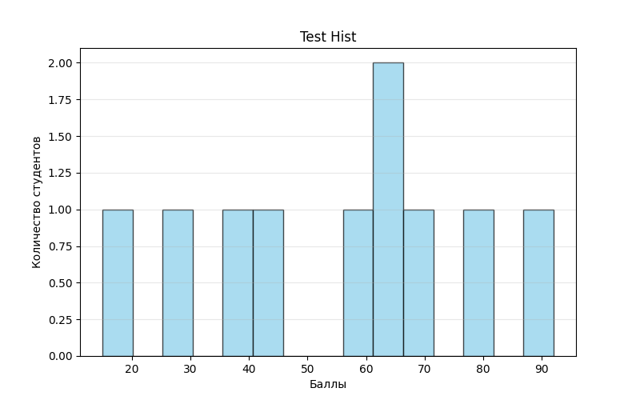

Лабораторная работа №2: Численные вычисления и анализ данных с использованием NumPy
Цель
Научиться работать с данными в Python: загружать таблицы, проводить математические расчеты и строить наглядные графики.
Задачи
Создать систему из нескольких файлов, которая:
-
Умеет выполнять базовые операции с матрицами и векторами (умножение, поиск определителя).
-
Загружает реальные данные об оценках студентов из CSV-файла.
-
Считает статистику: средний балл, медиану, разброс оценок и др.
-
Рисует графики (гистограммы, тепловые карты и т.д.), чтобы увидеть закономерности в оценках.
Реализация
Весь код разделен на логические части:
-
Математика (main.py). Здесь находятся функции для расчетов и графиков. В них добавлены аннотации (подсказки типов).
-
Скрипт анализа (run_analysis.py). Эта программа берет файл с оценками, находит в нем колонки с баллами и запускает расчеты.
-
Тесты (test.py, test_run_analysis.py).
Показать полный код main.py
import os # Модуль для работы с операционной системой (создание папок, проверка путей)
import numpy as np # Основная библиотека для вычислений (массивы, матрицы)
import pandas as pd # Библиотека для работы с таблицами (чтение CSV)
import seaborn as sns # Для тепловых карт
from typing import Dict, Union, List, Optional
import matplotlib
# Чтобы в тестах не появлялись всплывающие окна
matplotlib.use('Agg')
import matplotlib.pyplot as plt
# Создаем папку для графиков, если её нет
# 'exist_ok=True' предотвращает ошибку, если папка уже есть
os.makedirs("plots", exist_ok=True)
# ============================================================
# 1. СОЗДАНИЕ И ОБРАБОТКА МАССИВОВ
# ============================================================
def create_vector() -> np.ndarray:
"""
Создание массива от 0 до 9.
Использует np.arange, который работает как встроенный range(), но возвращает ndarray.
Returns:
numpy.ndarray: массив чисел от 0 до 9 включительно
"""
return np.arange(10)
def create_matrix()-> np.ndarray:
"""
Создание матрицы 5x5 со случайными числами в диапазоне [0,1].
Returns:
numpy.ndarray: матрица 5x5 со случайными значениями от 0 до 1
"""
return np.random.rand(5, 5)
def reshape_vector(vec: np.ndarray) -> np.ndarray:
"""
Преобразование (10,) -> (2,5).
Изменяет форму массива без изменения его данных.
Преобразует вектор из 10 элементов в матрицу 2 строки на 5 столбцов.
Args:
vec (numpy.ndarray): входной массив формы (10,)
Returns:
numpy.ndarray: преобразованный массив формы (2, 5)
"""
return vec.reshape(2, 5)
def transpose_matrix(mat: np.ndarray) -> np.ndarray:
"""
Транспонирование матрицы.
Args:
mat (np.ndarray): входная матрица.
Returns:
numpy.ndarray: транспонированная матрица
"""
return mat.T
# ============================================================
# 2. ВЕКТОРНЫЕ ОПЕРАЦИИ
# ============================================================
def vector_add(a: np.ndarray, b: np.ndarray) -> np.ndarray:
"""
Сложение векторов одинаковой длины (векторизация без циклов).
Каждый элемент a[i] складывается с b[i].
Args:
a (numpy.ndarray): первый вектор
b (numpy.ndarray): второй вектор
Returns:
numpy.ndarray: результат поэлементного сложения
"""
return a + b
def scalar_multiply(vec: np.ndarray, scalar: Union[float, int]) -> np.ndarray:
"""
Умножение вектора на число: каждый элемент массива умножается на скаляр.
Args:
vec (numpy.ndarray): входной вектор
scalar (float/int): число для умножения
Returns:
numpy.ndarray: результат умножения вектора на скаляр
"""
return vec * scalar
def elementwise_multiply(a: np.ndarray, b: np.ndarray) -> np.ndarray:
"""
Поэлементное умножение.
Args:
a (numpy.ndarray): первый вектор/матрица
b (numpy.ndarray): второй вектор/матрица
Returns:
numpy.ndarray: результат поэлементного умножения
"""
return a * b
def dot_product(a: np.ndarray, b: np.ndarray) -> float:
"""
Скалярное произведение.
Args:
a (numpy.ndarray): первый вектор
b (numpy.ndarray): второй вектор
Returns:
float: скалярное произведение векторов
"""
return np.dot(a, b)
# ============================================================
# 3. МАТРИЧНЫЕ ОПЕРАЦИИ
# ============================================================
def matrix_multiply(a: np.ndarray, b: np.ndarray) -> np.ndarray:
"""
Умножение матриц.
Args:
a (numpy.ndarray): первая матрица
b (numpy.ndarray): вторая матрица
Returns:
numpy.ndarray: результат умножения матриц
"""
return a @ b
def matrix_determinant(a: np.ndarray) -> float:
"""
Определитель матрицы.
Args:
a (numpy.ndarray): квадратная матрица
Returns:
float: определитель матрицы
"""
return np.linalg.det(a)
def matrix_inverse(a: np.ndarray) -> np.ndarray:
"""
Обратная матрица.
Args:
a (numpy.ndarray): квадратная матрица
Returns:
numpy.ndarray: обратная матрица
"""
return np.linalg.inv(a)
def solve_linear_system(a: np.ndarray, b: np.ndarray) -> np.ndarray:
"""
Решение системы Ax = b.
Args:
a (numpy.ndarray): матрица коэффициентов A
b (numpy.ndarray): вектор свободных членов b
Returns:
numpy.ndarray: решение системы x
"""
return np.linalg.solve(a, b)
# ============================================================
# 4. СТАТИСТИЧЕСКИЙ АНАЛИЗ
# ============================================================
def load_dataset(path="data/students_scores.csv")-> np.ndarray:
"""
Загрузить CSV и вернуть NumPy массив.
Использует Pandas для чтения и .to_numpy() для конвертации в массив NumPy.
Args:
path (str): путь к CSV файлу
Returns:
numpy.ndarray: загруженные данные в виде массива
"""
if not os.path.exists(path):
# Если файла нет, создаем его для корректной работы
os.makedirs(os.path.dirname(path), exist_ok=True)
with open(path, "w") as f:
f.write(
"math,physics,informatics\n78,81,90\n85,89,88\n92,94,95\n70,75,72\n88,84,91\n95,99,98\n60,65,70\n73,70,68\n84,86,85\n90,93,92")
df = pd.read_csv(path)
return df.to_numpy()
def statistical_analysis(data: np.ndarray) -> Dict[str, Union[float, np.ndarray]]:
"""
Словарь со статистическими показателями.
Вычисляет основные статистические метрики для набора данных.
Автоматически определяет: считать по одному столбцу или по всем сразу.
Нужно оценить:
- средний балл
- медиану
- стандартное отклонение
- минимум
- максимум
- 25 и 75 перцентили
Args:
data (numpy.ndarray): одномерный массив данных
Returns:
Dict[str, Union[float, np.ndarray]]: словарь с метриками (mean, std, median и т.д.). """
# Определяем ось: если массив двумерный (таблица), считаем по столбцам (axis=0)
# Если одномерный (тесты), считаем по всему массиву (axis=None)
ax = 0 if data.ndim > 1 else None
return {
"mean": np.mean(data, axis=ax), # Среднее арифметическое (средний балл)
"median": np.median(data, axis=ax), # Медиана (середина отсортированного списка)
"std": np.std(data, axis=ax), # Стандартное отклонение (разброс данных)
"min": np.min(data, axis=ax), # Минимальное значение
"max": np.max(data, axis=ax), # Максимальное значение
"percentile_25": np.percentile(data, 25, axis=ax), # 25% результатов ниже этого значения
"percentile_75": np.percentile(data, 75, axis=ax) # 75% результатов ниже этого значения
}
def normalize_data(data: np.ndarray) -> np.ndarray:
"""
Min-Max нормализация данных.
Формула: (x - min) / (max - min)
Args:
data (numpy.ndarray): входной массив данных
Returns:
numpy.ndarray: нормализованный массив данных в диапазоне [0, 1]
"""
data_min = np.min(data)
data_max = np.max(data)
return (data - data_min) / (data_max - data_min)
# ============================================================
# 5. ВИЗУАЛИЗАЦИЯ
# ============================================================
def plot_histogram(data: np.ndarray, title: str = "Распределение оценок") -> None:
"""
Строит и сохраняет гистограмму распределения данных.
Args:
data (numpy.ndarray): данные для гистограммы
title (str): заголовок графика и часть имени файла.
"""
plt.figure(figsize=(8, 5))
plt.hist(data, bins=15, color='skyblue', edgecolor='black', alpha=0.7, label='Количество студентов')
plt.title(title)
plt.xlabel("Баллы")
plt.ylabel("Количество студентов")
plt.grid(axis='y', alpha=0.3)
# Создаем имя файла на основе заголовка (заменяем пробелы на подчеркивания)
file_name = str(title).lower().replace(" ", "_")
os.makedirs("plots", exist_ok=True)
plt.savefig(f"plots/{file_name}.png")
plt.close() # Закрываем график, чтобы освободить оперативную память
def plot_heatmap(matrix: np.ndarray, labels: Optional[List[str]] = None) -> None:
"""
Строит тепловую карту корреляционной матрицы.
Чем ярче цвет, тем сильнее связь между переменными.
Args:
matrix (numpy.ndarray): матрица корреляции
labels (Optional[List[str]]): список названий столбцов для осей.
Returns:
None: результат сохраняется в папке 'plots/'
"""
plt.figure(figsize=(8, 6))
# Создаем словарь с базовыми настройками
kwargs = {
'annot': True,
'cmap': 'coolwarm',
'fmt': ".2f",
'xticklabels': labels if labels is not None else True,
'yticklabels': labels if labels is not None else True
}
# Распаковываем словарь в функцию (оператор **)
sns.heatmap(matrix, **kwargs)
plt.title("Тепловая карта корреляции предметов")
plt.savefig("plots/heatmap.png")
plt.close()
def plot_line(x: np.ndarray, y: np.ndarray, labels: Optional[List[str]] = None) -> None:
"""
График зависимости: студент -> оценка.
Args:
x (numpy.ndarray): номера студентов
y (numpy.ndarray): оценки студентов
labels (Optional[List[str]]): Легенда для каждой линии.
"""
plt.figure(figsize=(12, 6))
# Если y — это просто вектор (1D), превращаем его в 2D для универсальности цикла
y_to_plot = y.reshape(-1, 1) if y.ndim == 1 else y
# Если список названий не передан, создаем его автоматически по количеству столбцов
if labels is None:
labels = [f"Предмет {i + 1}" for i in range(y_to_plot.shape[1])]
# Рисуем линии
for i in range(y_to_plot.shape[1]):
plt.plot(x, y_to_plot[:, i], marker='o', label=labels[i], alpha=0.7)
plt.title("Оценки студентов")
plt.xlabel("ID Студента")
plt.ylabel("Балл")
plt.legend()
plt.grid(True, linestyle='--', alpha=0.6)
os.makedirs("plots", exist_ok=True)
plt.savefig("plots/line_plot.png")
plt.close()
if __name__ == "__main__":
print("Запустите python3 -m pytest test.py -v для проверки лабораторной работы.")
Показать полный код run_analysis.py
import numpy as np # Основная библиотека для вычислений (массивы, матрицы)
import pandas as pd # Библиотека для работы с таблицами (чтение CSV)
from main import statistical_analysis, plot_histogram, plot_line, plot_heatmap
def main() -> None:
"""
Основная точка входа в программу анализа данных.
Выполняет полный цикл обработки:
1. Загрузка данных из CSV.
2. Автоматическое определение числовых колонок для анализа.
3. Расчет статистических показателей.
4. Генерация и сохранение визуализаций (гистограммы, тепловая карта, линейный график).
Returns:
None: функция не возвращает значений, результат работы сохраняется в папке 'plots/'.
"""
# Загрузка данных
#path = "data/students_scores.csv"
path = "data/StudentsPerformance.csv"
df = pd.read_csv(path)
# Берем названия всех колонок, где есть слово 'score' или просто все колонки
# Это позволит коду работать с любым файлом
target_cols = df.select_dtypes(include=[np.number]).columns.tolist()
scores_data = df[target_cols].to_numpy()
# 1. Статистика по предметам
stats = statistical_analysis(scores_data)
# 2. Гистограммы
for i, col_name in enumerate(target_cols):
plot_histogram(scores_data[:, i], title=f"Распределение {col_name}")
# 3. Тепловая карта
corr_matrix = np.corrcoef(scores_data.T)
plot_heatmap(corr_matrix, labels=target_cols)
# 4. Линейный график
num_students = min(50, scores_data.shape[0])
plot_line(np.arange(num_students), scores_data[:num_students, :], labels=target_cols)
return
if __name__ == "__main__":
main()
Для проверок работы кода были использованы CSV файлы.
Полученные графики:
-
Для первого файла students_scores.csv
-
Тепловая карта

-
Линейный график оценки/студент

-
Распределение оценок по информатике

-
Распределение оценок по математике

-
Распределение оценок по физике

-
-
Для второго файла StudentsPerformance.csv (с сайта kaggle.com)
-
Тепловая карта

-
Линейный график оценки/студент

-
Распределение оценок по математике

-
Распределение оценок по чтению

-
Распределение оценок по письму

-
Тесты
Полный код тестов для main.py
from main import *
def test_create_vector():
v = create_vector()
assert isinstance(v, np.ndarray)
assert v.shape == (10,)
assert np.array_equal(v, np.arange(10))
def test_create_matrix():
m = create_matrix()
assert isinstance(m, np.ndarray)
assert m.shape == (5, 5)
assert np.all((m >= 0) & (m < 1))
def test_reshape_vector():
v = np.arange(10)
reshaped = reshape_vector(v)
assert reshaped.shape == (2, 5)
assert reshaped[0, 0] == 0
assert reshaped[1, 4] == 9
def test_vector_add():
assert np.array_equal(
vector_add(np.array([1,2,3]), np.array([4,5,6])),
np.array([5,7,9])
)
assert np.array_equal(
vector_add(np.array([0,1]), np.array([1,1])),
np.array([1,2])
)
def test_scalar_multiply():
assert np.array_equal(
scalar_multiply(np.array([1,2,3]), 2),
np.array([2,4,6])
)
def test_elementwise_multiply():
assert np.array_equal(
elementwise_multiply(np.array([1,2,3]), np.array([4,5,6])),
np.array([4,10,18])
)
def test_dot_product():
assert dot_product(np.array([1,2,3]), np.array([4,5,6])) == 32
assert dot_product(np.array([2,0]), np.array([3,5])) == 6
def test_matrix_multiply():
A = np.array([[1,2],[3,4]])
B = np.array([[2,0],[1,2]])
assert np.array_equal(matrix_multiply(A,B), A @ B)
def test_matrix_determinant():
A = np.array([[1,2],[3,4]])
assert round(matrix_determinant(A),5) == -2.0
def test_matrix_inverse():
A = np.array([[1,2],[3,4]])
invA = matrix_inverse(A)
assert np.allclose(A @ invA, np.eye(2))
def test_solve_linear_system():
A = np.array([[2,1],[1,3]])
b = np.array([1,2])
x = solve_linear_system(A,b)
assert np.allclose(A @ x, b)
def test_load_dataset():
# Для теста создадим временный файл
test_data = "math,physics,informatics\n78,81,90\n85,89,88"
with open("test_data.csv", "w") as f:
f.write(test_data)
try:
data = load_dataset("test_data.csv")
assert data.shape == (2, 3)
assert np.array_equal(data[0], [78,81,90])
finally:
os.remove("test_data.csv")
def test_statistical_analysis():
data = np.array([10,20,30])
result = statistical_analysis(data)
assert result["mean"] == 20
assert result["min"] == 10
assert result["max"] == 30
def test_normalization():
data = np.array([0,5,10])
norm = normalize_data(data)
assert np.allclose(norm, np.array([0,0.5,1]))
def test_plot_histogram():
# Просто проверяем, что функция не падает
data = np.array([1,2,3,4,5])
plot_histogram(data)
def test_plot_heatmap():
matrix = np.array([[1,0.5],[0.5,1]])
plot_heatmap(matrix)
def test_plot_line():
x = np.array([1,2,3])
y = np.array([4,5,6])
plot_line(x, y)
Полученные графики: * Тепловая карта

-
Линейный график оценки/студент

-
График распределения оценок

Полный код тестов для run_analysis.py
import pytest
import os
import numpy as np
from main import statistical_analysis, normalize_data
# Фикстура для создания временных данных перед тестами
@pytest.fixture
def sample_data():
return np.array([
[10, 20, 30],
[40, 50, 60],
[70, 80, 90]
])
# 1. Тест корректности расчетов статистики
def test_statistics_values(sample_data):
stats = statistical_analysis(sample_data)
# Проверяем среднее для первого столбца (10+40+70)/3 = 40
assert stats['mean'][0] == pytest.approx(40.0)
# Проверяем максимум для второго столбца
assert stats['max'][1] == 80
# Проверяем, что в словаре есть все нужные ключи
expected_keys = ["mean", "median", "std", "min", "max", "percentile_25", "percentile_75"]
assert all(key in stats for key in expected_keys)
# 2. Тест нормализации (Min-Max)
def test_normalization_range(sample_data):
norm = normalize_data(sample_data)
assert np.min(norm) == 0.0
assert np.max(norm) == 1.0
assert norm.shape == sample_data.shape
# 3. Проверка создания файлов графиков
def test_plots_generation():
# Создаем фиктивные данные для отрисовки
from main import plot_histogram, plot_heatmap, plot_line
test_data = np.random.randint(0, 100, (10, 3))
# Чистим папку plots перед тестом, если она есть
if os.path.exists("plots/test_hist.png"):
os.remove("plots/test_hist.png")
# Запускаем функции
plot_histogram(test_data[:, 0], title="Test Hist")
plot_heatmap(np.corrcoef(test_data.T))
plot_line(np.arange(10), test_data)
# Проверяем, появились ли файлы на диске
assert os.path.exists("plots/test_hist.png")
assert os.path.exists("plots/heatmap.png")
assert os.path.exists("plots/line_plot.png")
# 4. Тест обработки пустых или некорректных путей
def test_load_dataset_missing_file():
from main import load_dataset
# Проверяем, что функция создает файл, если его нет
path = "data/temp_test.csv"
if os.path.exists(path):
os.remove(path)
data = load_dataset(path)
assert data.size > 0
assert os.path.exists(path)
os.remove(path)
Полученные графики:
-
Тепловая карта

-
Линейный график оценки/студент

-
График распределения оценок

Нюансы при решении
В процессе работы возникло несколько технических сложностей:
-
Конфликты в тестах. После добавления строгой типизации (labels: List[str]) старые тесты в test.py перестали запускаться. Это было решено через Optional параметры, что позволило сохранить поддержку старых тестов, при этом расширив возможности новых функций.
-
Универсальность. Код настроен так, что он не выдает ошибок, если в таблице будет больше или меньше предметов. Он автоматически подстраивается под размер данных.
-
Чтобы программа работала с любым CSV-файлом, была применена фильтрация select_dtypes(include=[np.number]). Это позволяет коду автоматически игнорировать текстовые колонки (имена, пол, группы) и брать для расчетов только численные оценки.
Выводы
В ходе выполнения работы был создан универсальный инструмент для анализа данных, который обрабатывает таблицы с оценками и наглядно визуализирует результаты. Использование библиотек NumPy и Pandas позволило заменить сложные вычисления простыми командами. Благодаря добавлению аннотаций типов и автоматических тестов, программа стала надежной и понятной для других разработчиков, а все расчеты в ней подтверждены на 100% корректностью выполнения тестов.